h1>Equipamentos para acampar ou trilhar
Seja em uma situação de lazer ou de sobrevivência, encontrar um bom local para montar seu acampamento é uma das decisões mais importantes a serem tomadas, porém saber o que levar para estas situações é mais importante ainda.
Aqui vai uma lista e alguns apetrechos e ferramentas recomendadas para acampamentos ou trilhas na mata:
Repelente: Um repelente pode lhe fonecer uma boa proteção na hora de se aventurar no mato ou acampar, e até prevenir doenças das picadas de mosquitos.
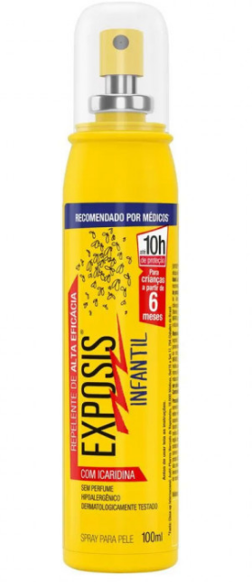
sinalizador ou apito: Preocupe-se em ter algo que sirva de sinalizador caso se perca.
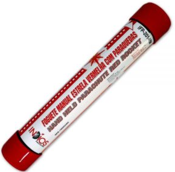
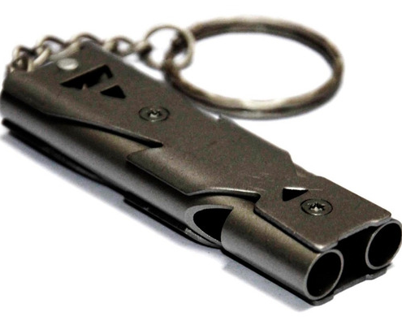
Lanternas: item essencial para coordenação na mata.
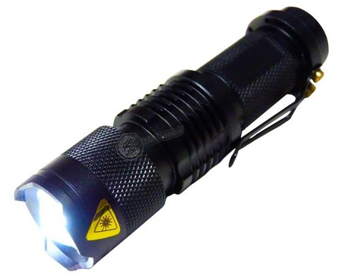
Lona: O abrigo é parte fundamental de uma experiência outdoor, ainda mais se for mais longa. Muitas vezes, é preciso montar um pequeno acampamento para passar a noite e, por isso, é importante levar um pedaço de lona que o proteja das variações climáticas.
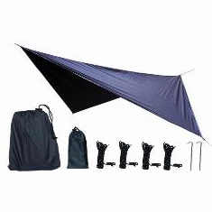
Bússola: Se caso peder o celular, sua unica alternativa é voltar aos meios tradicionais de localização.
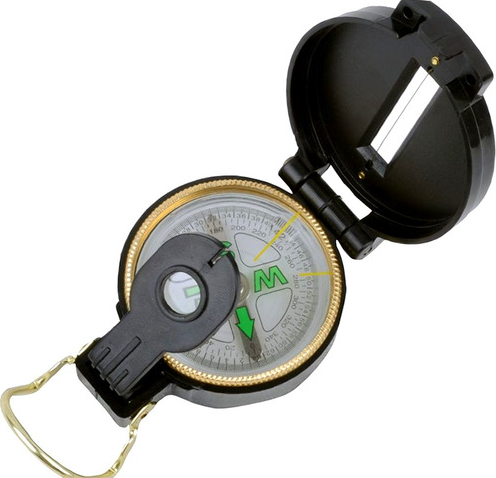
Pederneiras e isqueiros para fogo: Não pode faltar uma ferramenta para fazer fogo.
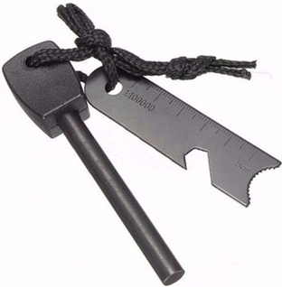
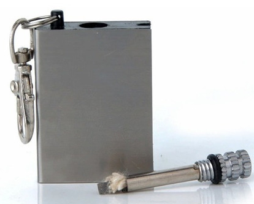
Protetor Solar: Alternativas para acampamentos ou trilha em lugares áridos.
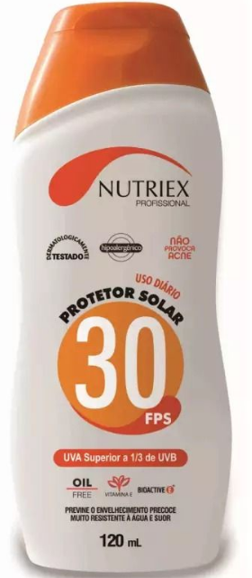
Roupa térmica: Ela manterá a temperatura do seu corpo e não deixará que o vento entre pela roupa.
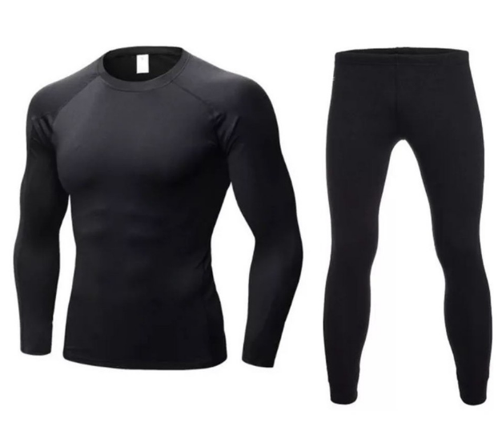
Cordas: As cordas fazem parte do grupo de acessórios multiusos. Elas serão de grande ajuda caso você precise amarrar algo, subir em algum local, montar uma cabana para dormir, ajudar alguém que ficou preso e muito mais.
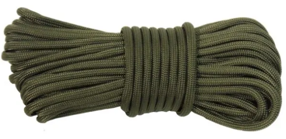
Coturnos ou sapatos tenis: Se for preciso acampar em regiões pantanosas, um bom coturno pode lhe salvar de picadas de cobras nos pés.
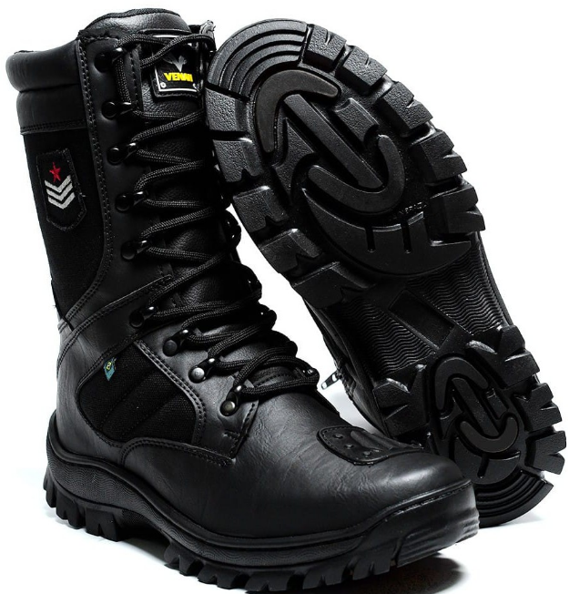
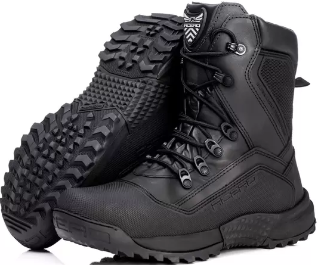
Sacolas plásticas: Pode não parecer, porém um saco plástico é sempre bom ter para poder guardar roupa, lixo e outras coisas que não devem ser deixadas na natureza.
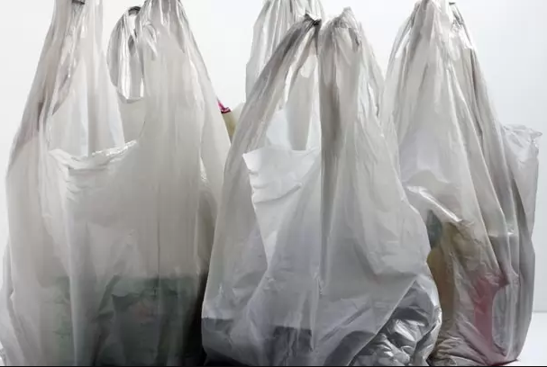